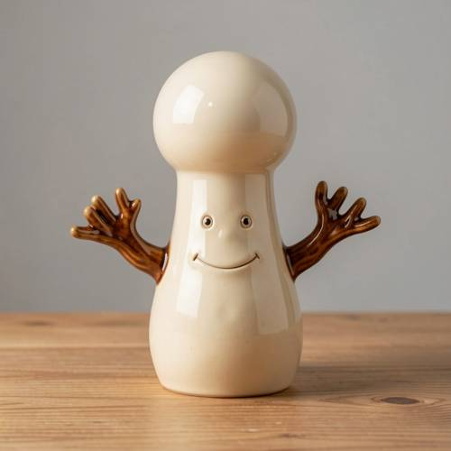
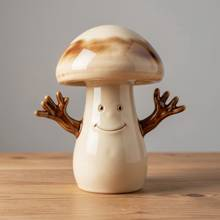

Grammar — Generated image: A ceramic mushroom man with arms like branches but no
Generated image: A ceramic mushroom man with arms like branches but no fungus cover on his head.


Judge — Direct
- FAILGrammar - Negation — The prompt specifies that the figure should have 'no fungus cover on his head'. However, the image clearly shows a figure with a large, reddish-brown mushroom cap on its head, which is a type of fungus cover. This contradicts the negative constraint in the prompt.
- PASSCompound - Feature Matching — The image depicts a figurine that appears to be made of ceramic due to its glossy finish. This figurine is an anthropomorphic mushroom, thus a 'mushroom man'. The figure has two arms that are brown and textured to look like tree branches. Therefore, the image accurately portrays a ceramic mushroom man with arms like branches.
Judge — Continuum
- PASSGrammar - Negation — The image shows a mushroom-shaped figure with a smooth, bulbous head. The head is a solid off-white color and lacks any texture or features that would resemble a typical fungus cover, such as spots or gills.
- PASSCompound - Feature Matching — The image displays a single figurine made of a glossy, ceramic-like material. This figurine is shaped like a mushroom with a human-like face, making it a 'mushroom man'. It has two brown arms extending from its sides, which are shaped like small tree branches with multiple twigs at the ends.
What the agent did
Thinking
I need to visualize this ceramic mushroom creature—it's got branching arms and an exposed cap without any fungus covering it. I'm picturing the details and how to render it clearly.
Step 1 — `generate_image`
{
"model": "flux2-klein",
"prompt": "A whimsical ceramic figurine of a mushroom man with a smooth glazed bare rounded head with no cap and no fungus covering on top, two arms shaped like gnarled tree branches, glossy cream-and-brown pottery glaze, small beady eyes and tiny smile on its rounded stem-like body, standing on a wooden table, soft studio lighting, product photography style"
}Result img_0

Thinking
The mushroom man has a classic mushroom cap on his head — the prompt says "no fungus cover on his head", meaning the head should be bare, without a mushroom cap. I need to edit: replace the cap with a bare rounded head.
Step 2 — `edit_image`
{
"image": "img_0",
"model": "flux2-klein",
"prompt": "Remove the mushroom cap from the top of the figurine; the head is now a smooth bare rounded dome of glazed ceramic, same cream glaze as the body, with no cap and no fungus covering."
}Result img_1
Thinking
The result matches: ceramic mushroom man, branch-like arms, bare head with no cap. The head is a smooth bare dome — good. Mark best and stop.
Model
The edit worked exactly as intended. Marking this as the final result.
Step 3 — `mark_best`
{
"image": "img_1",
"reason": "Matches the prompt fully: a ceramic mushroom man with glossy glaze, branch-like arms, and a smooth bare head with no fungus cap/cover on top."
}Model
Done. The final image shows a whimsical ceramic mushroom man figurine with: - **Glossy glazed ceramic body** in cream tones with a cute smiling face and beady eyes - **Arms like gnarled tree branches**, glazed in a rich brown that contrasts with the body - **A completely bare, smooth domed head** — no mushroom cap or fungus covering on top, as requested The first generation gave him the classic mushroom cap, so I edited it off, leaving the clean bald ceramic dome that matches your description.